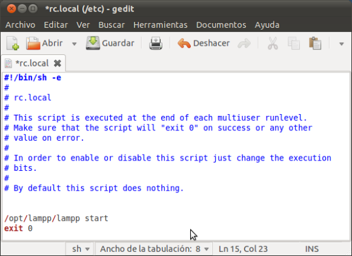

Instalación y configuración básica de XAMPP.
Una vez tenemos nuestro Ubuntu instalado. Vamos a instalar el Xampp. Pero antes ...
¿Qué es esto del Xampp?
Pues bien, Xampp es un paquete de instalación (un todo en uno) para webs,
con lenguaje php, conexión a base de datos MySql o MariaDB (LAMPP= Linux + Apache + MySQL + PHP + Perl).
Instalando Xampp podemos tener un servidor Web funcionando con todo
lo necesario para instalar los gestores de contenido gratuitos como WordPress, Joomla, Drupal…
Ahora hay que ponerse manos a la obra...
Pasos para instalar Xampp
Descarga la última versión de XAMPP. Si no sabes que versión te tienes que descargar, recuerda que puedes teclear el siguiente comando: Abre un terminal CTL+ALT+T El sistema te va a decir que si tienes un ordenador de 32 o 64 bits.
$ uname -m
El siguiente paso es ejecutar el comando
$run que te has descargado. Para ello, con el terminal ,sitúate en la carpeta de descarga y ejecuta el siguiente comando, comandos que hemos de lanzar como administradores.
$ cd /home/humancomputing/Downloads
$ sudo bash
Al estar en modo sudo, podeís ver que la ventana de comando, cambia tu nombre de “nombredeusuario@” a “root@“. Ejecuta el siguiente comando:
$ /home/humancomputing/Downloads/xampp-linux-1.8.3-4-installer.run
Con ésto te abre la ventana del instalación ya sólo nos queda seguir los pasos del instalador. Dale al botón siguiente (Next>).
Empieza la instalación.
En éste punto te dice donde se vá a crear la carpeta raiz de XAMPP: En
/opt/lampp
Carpeta donde se instalará: /opt/lampp Seleccionamos los componentes que queremos instalar. En mi caso, por defecto.
Te sale el mensaje de Bienvenido a Xampp, mientras carga tu configuración.
Una vez configurado, dale click a “Siguiente”, para que lo instale.
Una vez instalado, os muestra el “log de aplicación”, un fichero que os dá la información del Xampp funcionando. Iniciando los servicios.
¡Ya tenemos el Xampp funcionando!
En el navegador, se abre la ventana de Xampp. Si navegas por el menú izquierdo de la página verás que te dá información de todo lo que has instalado.
Tu configuración básica del Xampp ya estaría terminada.
Para lanzar por terminal Xampp debemos abrir una terminal y escribir:
- Para iniciar Xampp.-Para detener los servicios.$ sudo /opt/lampp/lampp start$ sudo /opt/lampp/lampp stop
Por último y no menos importante nos queda es añadir el inicio de Xampp al arranque de Ubuntu.
Para ello, Ubuntu dispone del archivo
rc.local alojado en /etc que sirve para que podamos
iniciar scripts o cualquier ‘demonio’ que no disponga de inico automático, sin tener que hacer modificaciones en los
scripts del sistema y que se ejecuta al inicio antes de que nos logueemos.
En una terminal editamos como root el archivo rc.local con el editor que deseemos, en mi caso he usado el gedit.
$ sudo /gedit /etc/rc.local
Tal y como nos dicen las líneas de comentario en el archivo, debemos poner nuestros comandos antes de la línea del ‘exit 0′ . Debemos tener presente que no podemos alterar esa línea ya que se produciría un error.

Guardamos los cambios y cerramos el editor, ya sólo nos queda reiniciar el sistema para poner a prueba nuestro 'StartUp de XAMPP.'
Para comprobar el buen funcionando de nuestro programa, que está activo tras el inicio de nuestro sistema
abriremos una terminal y escribiremos:
$ sudo /opt/lampp/lampp status